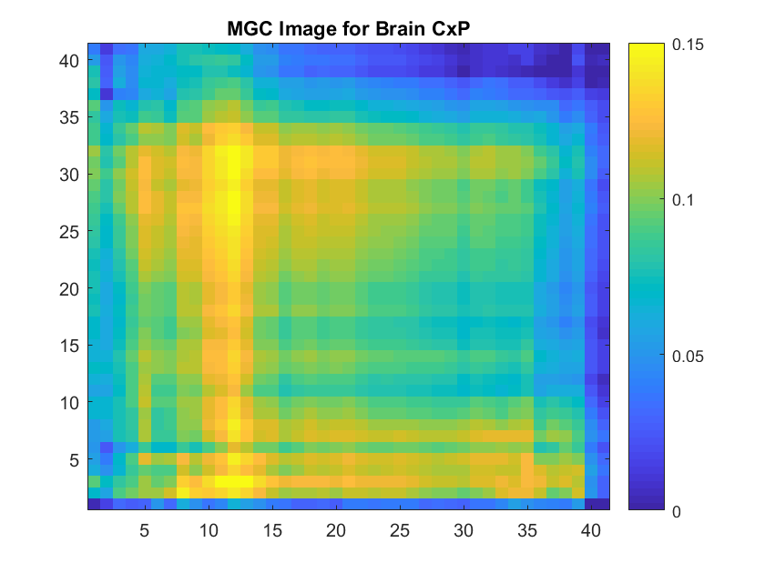
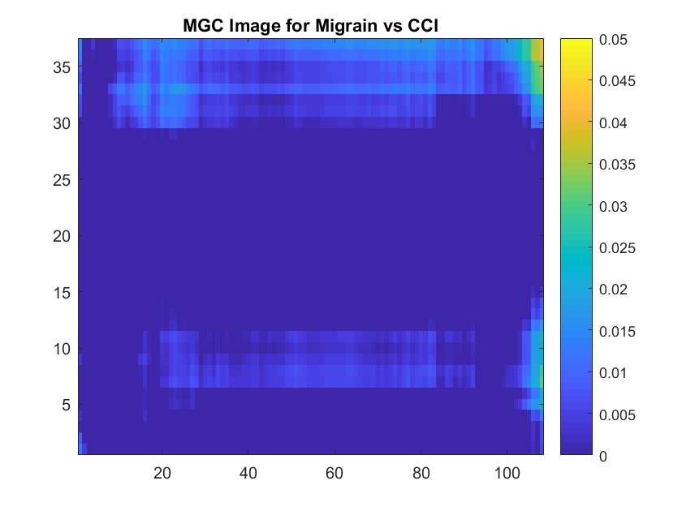
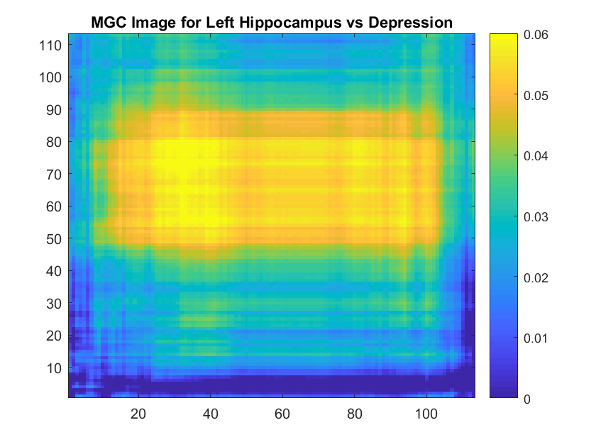
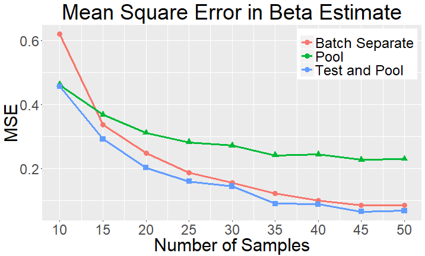
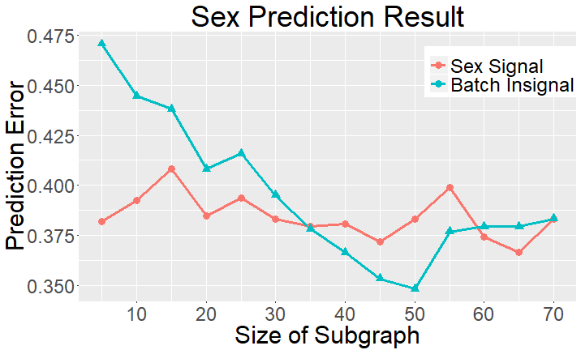

class: middle, left name:opening #### A Multiscale Graph Knowledge Representation System ##### Applications: Experiments, Theory, and Beyond <br><br> Presented by: [Joshua T. Vogelstein](mailto:jovo@jhu.edu), [JHU](https://www.jhu.edu/) <br> Please interrupt & ask questions! --- ### What is a graph in this context? - a set of nodes (defined by points) - a set of edges (defined by pairwise functions) - weighted? - directed? --- #### A brief history of graphs in knowledge representation -- - Machine Learning - k-Nearest Neighbors (Stone, 1977) - kernel learning (Vapnik, 1995) -- - Hypothesis Testing - graph dependence (Friedman & Rafsky, 1983) - distance correlation (Szekely et al, 2007) -- - Manifold Learning - Isomap (Tenebaum et al, 2000) - Locally Linear Embedding (Roweis & Saul, 2000) - Computational topology (Edelsbrunner & Harer, 2010) -- - Heterogeneous Data & Semi-Supervised Learning - Multiple Kernel Learning (Jordan et al, 2004) --- <!-- class: center, middle --> class: left #### Three Strategies Using Graphs for KRS 1. choose k a priori 2. estimate k from data using cross-validation 3. let n=k problems with each -- 1. how to choose a good one for the given data 2. computationally and statistically costly 3. fails to leverage locality principle --- ### Our Approach: Multiscale Graphs 1. for each modality, compute n nearest neighbor graphs 2. combine them 3. jointly find the optimal scales using a surrogate function -- ### Our Result - unifying framework for disparate exploitation tasks - universal consistency - computational efficiency - empirical performance - flexibility --- ### Parallels: PCA vs NMF - PCA - nested: N low-rank representations of data - theoretical gurantees with finite data -- - NMF - no guarantees of "best" - must compute d+1 representation "from scratch" -- - Multiscale Graph Knowledge Representation - nested: for each of $M$ modalities we build $N_m$ graphs - theoretical guarantees with finite data - the "graph" version PCA --- class: center, middle # applications --- ### Applications - **independence testing** [[1]](https://arxiv.org/abs/1609.05148), [[2]](https://arxiv.org/abs/1710.09768) - graph topology vs. attributes [[3]](https://arxiv.org/abs/1703.10136) - signal subgraph detection [[4]](https://arxiv.org/abs/1801.07683) - clustering (ish) [[5]](https://arxiv.org/abs/1710.09859) -- - K-sample testing - feature selection - **quantify geometry of relationships** - **batch effect detection & mitigation** --- class: middle, center # indepedence testing --- ### Independence Testing <br> | \\(X\\) | \\(Y\\) | | :--- | :--- | | clouds | grass wetness | | brain | mind | | gene expression | cell type | | thermoelectric materials | performance | | anything | anything else | --- class: center #### Formal Definition of Independence Testing <br><br> <!-- <img src="images/setup.png" alt="Drawing" style="width: 60%;"/> --> $$(X\_i,Y\_i) \sim F\_{XY} = F\_{X|Y} F\_Y, \quad i \in \{1,\ldots,n\}$$ $$H\_0: F\_{XY} = F\_X F\_Y $$ $$H\_A: F\_{XY} \neq F\_X F\_Y $$ --- class: top, left ### Empirical Desiderata/Properties Strong performance with reasonable computational time in the following settings: | name | principle | | --- | --- | | linear | ✅| | non-linear | ✅| | low-dimensional | ✅ | | high-dimensional | ✅ | | Euclidean | ✅ | | non-Euclidean | ✅ | | low-sample size | ✅ | | high-sample size | ✅ | --- ### Multiscale Graph Correlation (MGC) - For X modality, compute all pairwise distances - For k < n, compute the k-nearest neighbors of each point in X - For Y modality, compute all pairwise distances - For l < n, compute the l-nearest neighbors of each point in Y - For all (k,l) pairs, compute the local correlation between distances - Select (k,l) pair with maximum correlation (after smoothing) - Permutation test ### Notes - leveraging locality - surrogate function to find best local scale --- class: left ### intuition <img src="images/linear.png" alt="Drawing" style="height: 300px;"/> -- <img src="images/spiral.png" alt="Drawing" style="height: 300px;"/> --- class: top, left ### 20 Different Functions (1D version) <img src="images/FigSimVisual.png" alt="local" style="width: 100%;"/> --- class: top, left ### Definitions - **null assumption**: <br>data are independent - **power**: <br>probability of rejecting the null when the alternative is true - **N<sub>Β</sub>(t)**: <br># of samples required to achieve power $\beta$ using test statistic $t$ - **statistical efficiency**: $N\_\beta(t') / N\_\beta( \text{MGC}) \geq 1 \text{ for all } n, \, d, \, F\_{XY}, \text{ and } t' $ <!-- $$\beta\_n(\text{MGC}) > \beta\_n(t') \text{ for all } --> <!-- n, \, t' \in \mathcal{T}, \text{ and } F\_{XY} $$ --> <!-- 2. quantification of relationship --> --- class: top, left ### MGC Outperforms Benchmarks <br> <img src="images/Fig2_jk.png" alt="local" style="width: 100%;"/> <!-- -- --> <!-- <img src="images/FigHDPowerSummarySize.png" alt="local" style="position:absolute; LEFT: 460px; height: 280px;"/> --> <!-- .center[ <img src="https://github.com/neurodata/MGC/raw/master/Figures/FigHDPowerMGCM.png" alt="Drawing" style="width: 900px;"/> ] --> --- class: top, left ### MGC Outperforms Benchmarks <br> <img src="images/table_benchmarks.png" alt="local" style="width: 100%;"/> --- class: top, left ### MGC Discovers Relationships between Brain & Mental Properties <br><br> <img src="images/table.png" alt="Drawing" style="width: 100%;"/> --- class: top, left ### Theoretical Desiderata/Properties <!-- <br> --> | name | principle | | --- | --- | | boundedness | $0 \leq T \leq 1 $| | symmetric | $T(X,Y) = T(Y,X)$ | | 1-linear. | $ T= 1 \Leftrightarrow y = A x + b$ | | 0-indep. | $T=0 \Leftrightarrow H(X \lvert Y) = H(X)$ | | ortho. invar. | $T(X,Y) = T(a_1 + b_1 C_1 X, a_2 + b_2 C_2 Y)$ | | univ. consist. | $\beta\_n(T) \to 1, \, \forall \, F\_{XY} \neq F_X F_Y$ | | dominance | $\beta\_n(T) \geq \beta\_n(T'), \, \forall n,\, T' \in \mathcal{T}, \forall F\_{XY}$ | | convergence | $\beta_n(t) \to \beta_n(T)$ as $n \to \infty$ | <!-- | efficiency | $\mathbb{E}\beta_n(t) \geq \mathbb{E}\beta_n(t'), \, \forall n, t' \in \mathcal{T}$ | --> <!-- | | comp. efficiency | $\mathcal{O}(d n^2 \log n)$ space and time | --> <!-- 9. "reveal the "geometry/topology" of the relationship" --> --- class: middle, center ### quantify geometry of relationships --- class: top, left ### Empirical Desiderata | name | principle | | --- | --- | | multiscale | ✅| | quantitative | ✅| | image | ✅ | | n<sup>2</sup> time | ✅ | | unique | ? | --- class: top, left #### MGC "Image" <img src="images/Fig1DHeat.png" alt="local" style="width: 100%;"/> <!-- .center[ <img src="https://github.com/neurodata/MGC/raw/master/Figures/FigHDHeat.png" style="width: 900px;"/> ] --> --- class: top, left ### MGC Reveals Geometry of Real Data    --- ### conjecture MGC image is unique for a given $F_{XY}$ pair. -- ### implication Can use difference of MGC images as test statistic to compare two different dependence functions, eg, in batch effect detection --- class: middle, center # batch effects --- ### general form - $y$ is response variable - $x$ is feature vector - $\epsilon$ is iid noise - $b$ indicates batch $1,...,B$ - $i$ indexes samples $1,...,n$ - $y_i^b = f^b(x^b_i) + \epsilon_i^b$ -- ### simple linear scennario - $y^i = a_1^b x^i_1 + a_2^b x^i_2 + \epsilon$ - $y^i = a_1^{b'} x^i_1 + a_2^{b'} x^i_2 + \epsilon$ - $a_1^b = a_1^{b'}$, $a_2^b \neq a_2^{b'}$ --- ### possible strategies 1. operate on each dataset separately 2. pool the data together (pretending no batch effect) 3. use MGC to test for batch effects for each $a$, and pool variables when no effect --  --- ### real data example - data consist of (graph,sex) pairs - two batches with 467 & 300 samples - graphs have 70 vertices each --- ### two strategies - step 1: - remove vertices that are uninformative with respect to sex - remove vertices that are informative with respect to batch - step 2: Bayes plug-in sex classifier on remaining vertices  --- ### Summary - MGC for independence testing - MGC for quantifying relationship geometry - MGC for batch effect mitigation --- ### Next Steps - independence testing [[1]](https://arxiv.org/abs/1609.05148), [[2]](https://arxiv.org/abs/1710.09768) - graph topology vs. attributes [[3]](https://arxiv.org/abs/1703.10136) - signal subgraph detection [[4]](https://arxiv.org/abs/1801.07683) - clustering (ish) [[5]](https://arxiv.org/abs/1710.09859) - **K-sample testing** - **feature selection** - **quantify relationship geometry** - **batch effect detection & mitigation** --- ### Further Steps - Connections between MGC and **Random Forest** - Scale up to be **linear** in $N_m$ - We search over $N_1 \times N_2 \times \cdots N_M$ kernels, can we more efficiently **learn** the right kernels? - Using **Deep Learning** inside MGC - Additional applications - Put existing [R package]((https://github.com/neurodata/mgc) on CRAN --- class: left, top ## Questions? [Joshua T. Vogelstein](mailto:jovo@jhu.edu) <br> {[bme](http://www.bme.jhu.edu/),[icm](http://icm.jhu.edu/),[cis](http://cis.jhu.edu/),[idies](http://idies.jhu.edu/),[kavli](http://kavlijhu.org/),[cs](http://engineering.jhu.edu/computer-science/), [ams](http://engineering.jhu.edu/ams/), [neuro](http://neuroscience.jhu.edu/), [minds](https://www.minds.jhu.edu/)} | [jhu](https://www.jhu.edu/) <br> <br> Joint work with: Cencheng Shen, Youjin Lee, Shangsi Wang, <br> Qing Wang, Eric Bridgeford, Carey E Priebe, Mauro Maggioni e: [jovo@jhu.edu](mailto:jovo@jhu.edu) <br> w: [neurodata.io/tools/MGC/](http://neurodata.io/tools/MGC/) <img src="http://brainx.io/images/funding/nsf_fpo.png" STYLE="position:absolute; TOP:550px; LEFT:10px; HEIGHT:100px;"/> <img src="http://brainx.io/images/funding/nih_fpo.png" STYLE="position:absolute; TOP:550px; LEFT:120px; HEIGHT:100px;"/> <img src="http://brainx.io/images/funding/darpa_fpo.png" STYLE="position:absolute; TOP:550px; LEFT:230px; HEIGHT:100px;"/> <img src="http://brainx.io/images/funding/iarpa_fpo.jpg" STYLE="position:absolute; TOP:550px; LEFT:430px; HEIGHT:100px;"/> <img src="http://brainx.io/images/funding/kavli_fpo.png" STYLE="position:absolute; TOP:550px; LEFT:550px; HEIGHT:100px;"/> <img src="http://brainx.io/images/funding/kndi_fpo.png" STYLE="position:absolute; TOP:550px; LEFT:650px; HEIGHT:100px;"/> --- ### Computational Desiderata 1. fast 2. open source <br> | Method | Complexity | | :---: | :---: | | Dcorr | n<sup>2</sup> | | HHG | n<sup>2</sup> log n | | MGC | n<sup>2</sup> log n / T | - MATLAB and R code at [http://neurodata.io/tools/MGC/](http://neurodata.io/tools/MGC/) <!-- --- --> <!-- ### 1D Power All --> <!-- <img src="https://github.com/neurodata/MGC/raw/master/Figures/Fig1DPowerAll.png" alt="Drawing" style="width: 800px;"/> --> <!-- --- --> <!-- ### HD Power All --> <!-- <img src="https://github.com/neurodata/MGC/raw/master/Figures/FigHDPowerAll.png" alt="Drawing" style="width: 800px;"/> --> <!-- --- --> <!-- ### 1D Heat --> <!-- <img src="https://github.com/neurodata/MGC/raw/master/Figures/Fig1DHeat.png" alt="Drawing" style="width: 800px;"/> -->